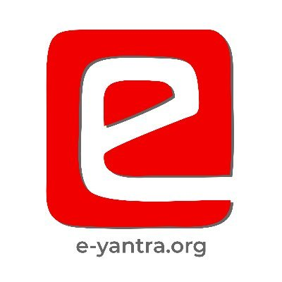

Budding roboticist and researcher.
👩🏽🎓 Currently : Graduate Student in Engineering Science with a Focus in Robotics at University at Buffalo.
👩🏽💻 Previously : Senior Project Technical Assistant at e-Yantra.
👀 Looking for : Summer Internship Positions starting May 2022.
Overview of Work Expereince
Senior Project Technical Assistant
e-Yantra, Indian Institute of Technology Bombay (IIT Bombay) India.
July 2020 - July 2021

e-Yantrais a robotics based outreach program which complements current higher education systems through Project Based Learning. The e-Yantra Project is hosted at the Embedded Real Time System Labarotory at the Computer Science Department at IIT Bombay. One of my primary responsibilities as a Senior Project Technical Assiatnt involved developing a theme for the e-Yantra Robotics Competition, an International Competition conducted over the span of 6 months.Technology Stack : Robot Operating System middleware, Python Programming, Planning Frameworks (MoveIt!, RViz), HiveMQ Broker, Vanilla JavaScript, Server Side Computing.
Some of my other responsibilities included :
Intern
Ansys, Electronics Business Unit, India
June 2019 - December 2019
I worked as an intern during my senior year of college at ANSYS, a comapny leading in global multiphysics simulation software with revenues of $1.5 billion. During the internship, I developed a Semi Supervised tool to predict performances of RF devices using ANSYS HFSS (High Frequency Structural Simulator)and Deep Learning Frameworks.Some of my tasks during the internship included :